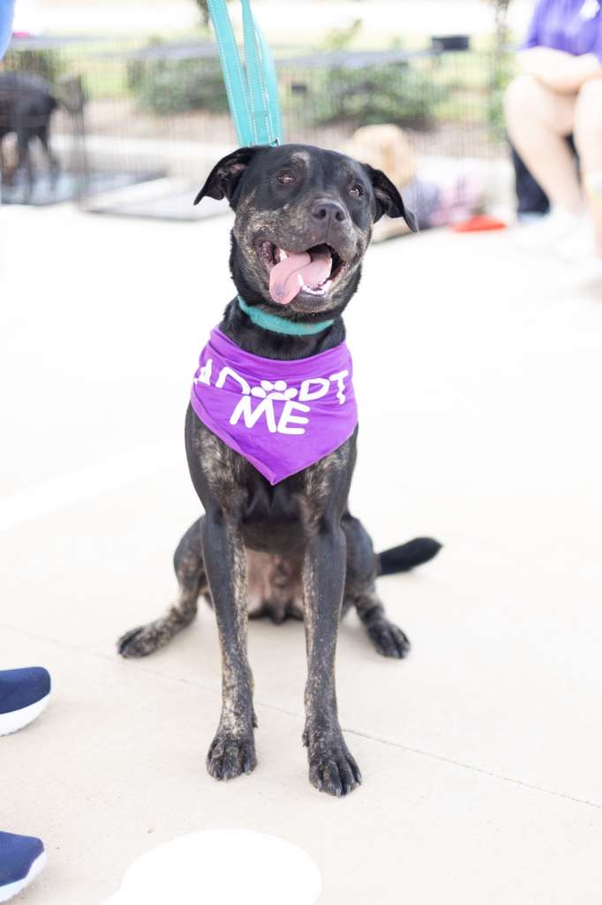
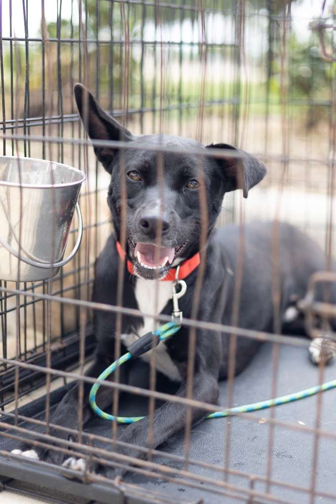
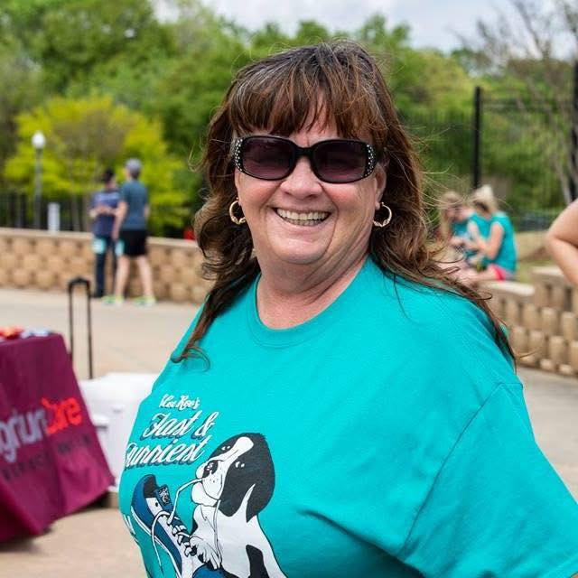
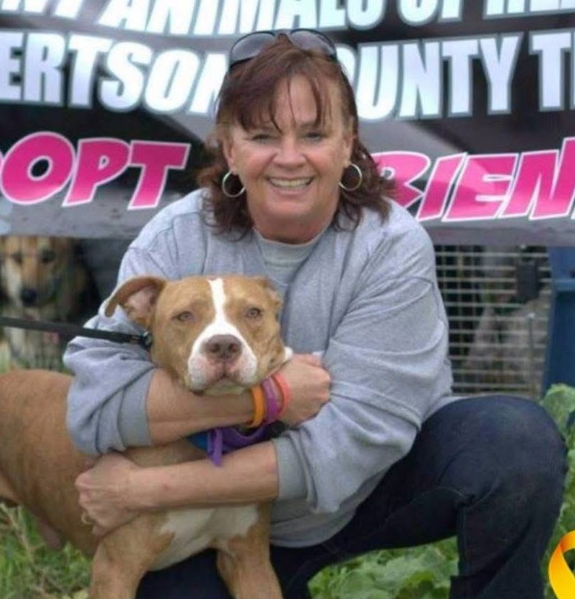

Urgent Animals of Hearne
Saving pets in Roberston County
About Urgent Animals of Hearne

Our Mission
The mission of Urgent Animals of Hearne is to save as many animals as possible in Hearne Animal Control, a catch and kill facility in Central Texas. Every animal listed here are in dire need of a foster or forever homes.
We are a network of dedicated volunteers located about 20 miles north of College Station and three hours south of Dallas. Our group was originally formed to rescue pets from the City of Hearne Animal Control, where animals were routinely euthanized for nearly 12 years. Today, our mission has grown to help animals across several surrounding counties.
ALL of our pets are FULLY vetted before adoption.

Our Story
We operate entirely on donations - we receive no funding from the city, corporations, or businesses. We are not a building, but rather a community of fosters who open their homes to save lives.
If you would like to know how you can help, please send us a private message. Whether you choose to adopt, foster, or donate, your support makes a life-changing difference.
95% of the animals we rescue come from Hearne Animal Control, but we assist others in need as well. Please take a moment to check out the available pets and consider adopting, fostering, or donating. These animals need you.
About Our Founder
Deborah Ann "Deb" Green Fatheree
March 30 1954 - September 4 2025

Deborah Ann Green Fatheree, beloved wife, sister, aunt, friend, and tireless animal advocate, passed away peacefully on
September 4, 2025, at the age of 71. She was born on March 30, 1954, in Rock Hill, South Carolina, to the late Calvin S. Green
and Dorothy Buckley Green.
A woman of fierce spirit and unmatched compassion, Deb became a warrior for the voiceless. Through her rescue work, she saved
over 4,000 pets, each one a life spared and a family blessed. Her passion for animals changed not only their lives but also the
lives of countless people who welcomed them into their homes. Known for her honesty, tenacity, and refusal to shy away from the
truth, Deb embodied courage. She was unafraid to ruffle feathers much like the beautiful birds she cherished, Tarzan and Coo-coo,
if it meant protecting an animal in need.

Her impact stretched far beyond Robertson County, where she became a cornerstone of the rescue community. She was a mentor and
a steady hand in times of heartbreak. She stood with countless pet owners through the loss of beloved pets, guided them in
fostering and adoption, and inspired them to join in her mission of rescue.
Deb will be remembered for her unwavering devotion to animals, her strength of spirit, her candor, and her friendship.
Donate

Your Donations help with medical costs, including but not limited to vaccinations
and emergency treatments, and also allow us to board animals that are at the end of
their time at the shelter.
It's a last resort before euthanasia, but we do not want to see these sweet animals
be put down.
You can never imagine how much we appreciate any donation you are able
to provide, no matter how big or small. We couldn't help these precious souls without you!
Thank you from the bottom of our hearts!
Alternatively, you can always call Robertson County Veterinary Services at 979-279-9201
and make a donation directly to them.
Donate Here